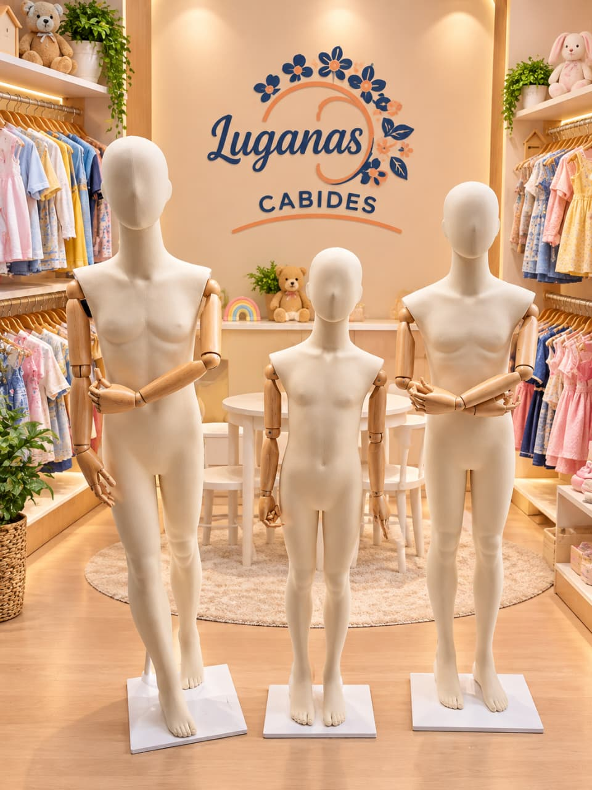
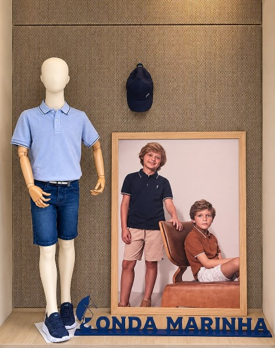
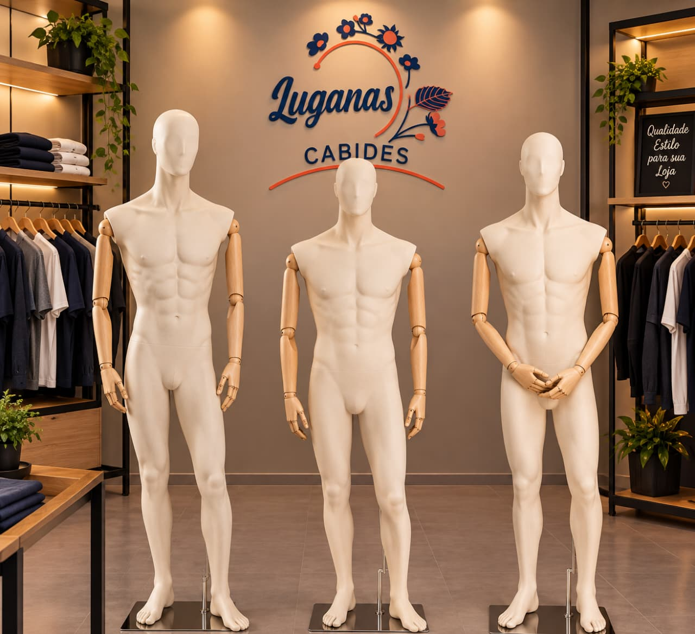
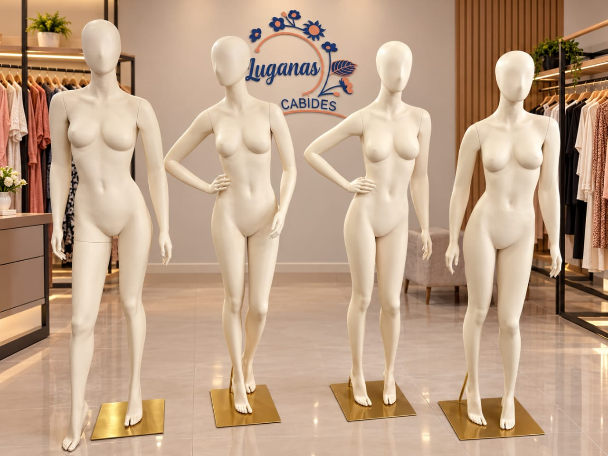
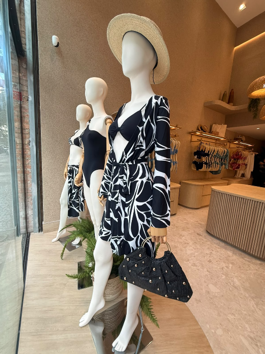
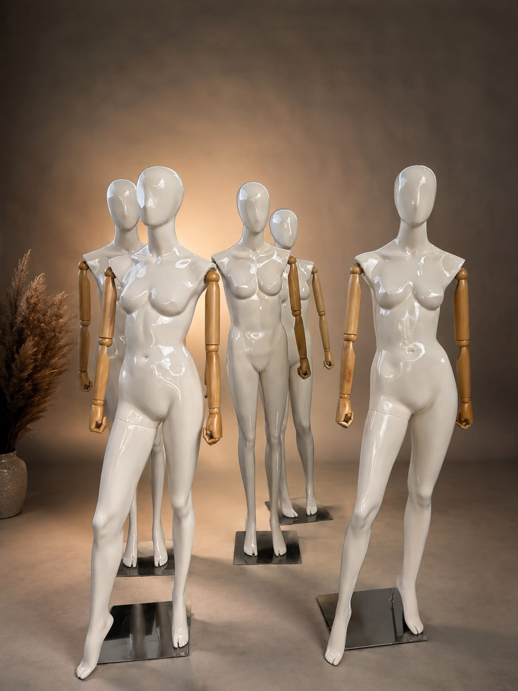
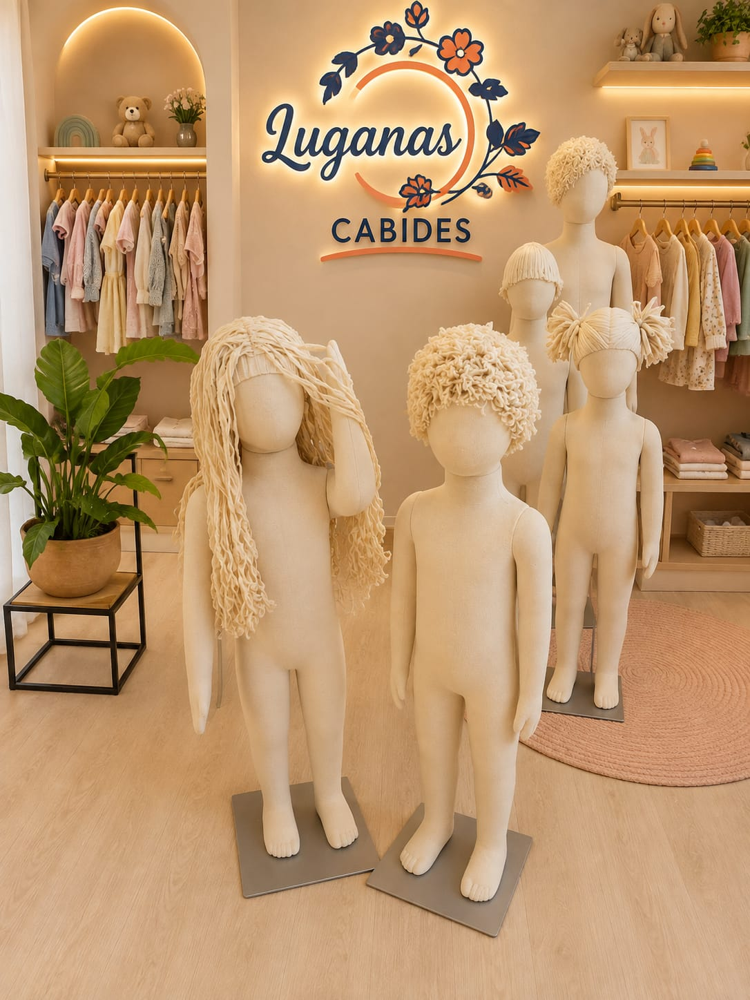
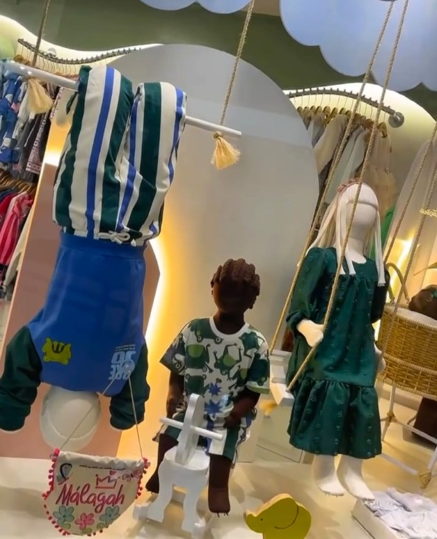
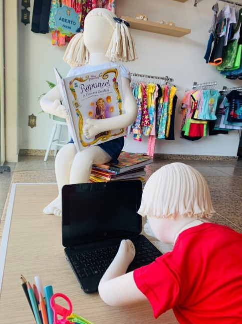

Foto 1 de 2
Manequins infantis de fibra
Proporções para a exposição de moda infantil. O valor varia conforme a idade. Você pode escolher o modelo da cabeça e a cor do cabelo.

Uma nova perspectiva para compor a vitrine e destacar sua coleção.


Proporções para a exposição de moda infantil. O valor varia conforme a idade. Você pode escolher o modelo da cabeça e a cor do cabelo.

Presença para compor a apresentação de moda masculina.


Diferentes poses para dar ritmo à composição da vitrine.

Contraste de texturas e articulações para criar composições.



Modelos infantis articulados para compor vitrines em diferentes poses. O valor varia conforme a idade. Você pode escolher o modelo da cabeça e a cor do cabelo.
Entre em contato conosco e conte o que você precisa.